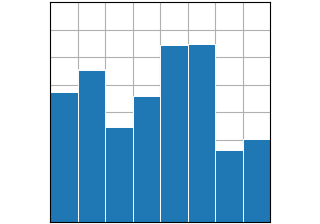

Basic# Basic plot types, usually y versus x. plot(x, y) plot(x, y) scatter(x, y) scatter(x, y)  bar(x, height) bar(x, height) stem(x, y) stem(x, y) step(x, y) step(x, y) fill_between(x, y1, y2) fill_between(x, y1, y2) stackplot(x, y) stackplot(x, y)